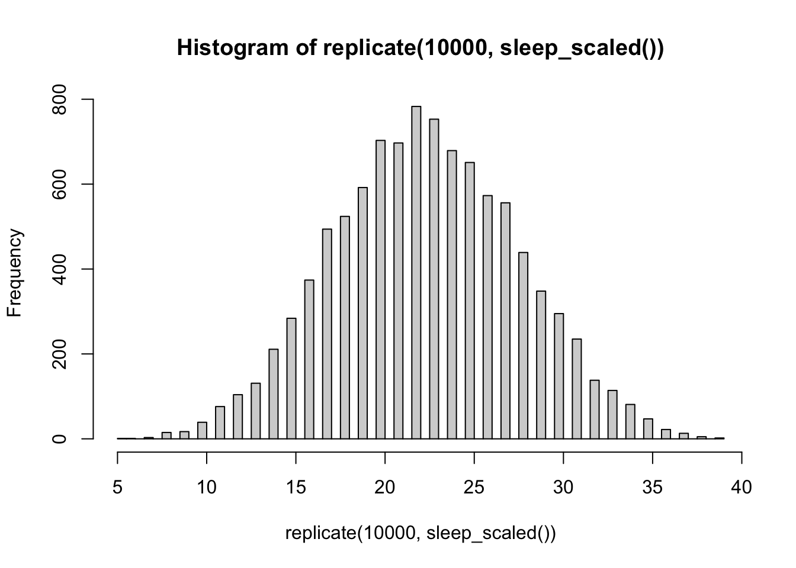

Chapter 10 Functions
library(tidyverse)From R4DS and the Solution book for R4DS. Make functions to calculate the coefficient of variation (cV) and the variance (xVar) of a vector.
x <- c(1:10, rep(NA,3))
cV <- function(x){
sd(x, na.rm = TRUE)/mean(x, na.rm = TRUE)
}
cV(x)## [1] 0.5504819xVar <- function(x) {
n <- length(x[!is.na(x)])
m <- mean(x, na.rm = TRUE)
sq_err <- (x - m)^2
sum(sq_err, na.rm = TRUE) / (n - 1)
}
xVar(x)## [1] 9.166667The interesting thing is that these functions are exceptionally modular. By working stepwise through the calculation, it’s possible to take a much more difficult or obscure problem and “unpack” it.
10.1 A little Dungeons & Dragons (tm) to spice it up
Adapted from Richie Cotton’s DataCamp introductory course on function writing. The following example shows how a function can emulate the rolling of a die, for instance, in D&D.
roll_die <- function(n_die){
die_sides <- 1:6
sample(die_sides, n_die, replace = TRUE)
}
roll_die(6)## [1] 6 5 1 6 1 2Let’s apply some of these simple ideas to D&D. Say I play a character that can cast the sleep spell. This scales to different levels.
At first level, one rolls 5 six-sided die.
sleep <- function(){
sum(sample(1:8, size = 5, replace = TRUE))
}
sleep()## [1] 27If cast at higher levels, the spell adds 2 die per level above first: 7 die at second level, 9 die at third level, etc. Let’s address this by adding a level variable to our function.
sleep_scaled <- function(level){
if(level > 1){add_die = (level-1)*2
} else{
add_die = 0
}
sum(sample(1:8, size = 5 + add_die, replace = TRUE))
}A couple of things can be added to avoid the following goofy mishaps (or at least render useful error codes:
sleep_scaled(0)## [1] 24# sleep_scaled("rex")
# removed so that **knitr** doesn't choke on thisFirst we load Richie Cotton’s package {assertive}.
library(assertive)Then we get to work on the function. Note how assert_is_numeric() generates an automatic message if a non-numeric input is handed to the function. More refined rules that include custom error messages can also be used, as in the if(){} statement, below.
sleep_scaled <- function(level = 1){
assert_is_numeric(level)
if(any(is_non_positive(level))){
return("x contains nonpositive values, so the spell makes no sense")
}
if(level > 1){add_die = (level-1)*2
} else{
add_die = 0
}
sum(sample(1:8, size = 5 + add_die, replace = TRUE))
}
sleep_scaled(0)## [1] "x contains nonpositive values, so the spell makes no sense"sleep_scaled()## [1] 26sleep_scaled(2)## [1] 32# sleep_scaled("joseph")
# removed so that **knitr** doesn't choke on thisNow, it would be useful to see the distribution of these rolls, to predict whether the spell would be effective, say, on a horde of kobolds.
hist(replicate(10000, sleep_scaled()), breaks = 70)
10.2 Geometric and harmonic means
Good examples on functions. Also taken from Richie Cotton’s DataCamp introductory course on function writing.
Geometric mean (GM) is calculated differently than the arithmetic mean (AM), and is often used in investment. Outliers are dampened in the geometric mean. Notice, however, that only positive numbers may be examined with geometric mean.
The harmonic mean (HM) is useful for sets of numbers defined in relationship to some unit, as in the case of speed (in m/sec, for instance).
Note the following relationship: AM >= GM >= HM
x <- c(1,2,3,4,4,12, NA)
y <- c(1,2,3,4,4,12,-2,NA)
mean(x, na.rm = TRUE)## [1] 4.333333mean(y, na.rm = TRUE)## [1] 3.428571log(x) %>% mean() %>% exp()## [1] NAlog(x)## [1] 0.0000000 0.6931472 1.0986123 1.3862944 1.3862944 2.4849066 NAexp(x)## [1] 2.718282e+00 7.389056e+00 2.008554e+01 5.459815e+01 5.459815e+01
## [6] 1.627548e+05 NAcalc_geom_mean <- function(x, na.rm = TRUE){
log(x) %>% mean(na.rm =na.rm) %>% exp()
}
calc_geom_mean(x)## [1] 3.237741calc_geom_mean(y)## Warning in log(x): NaNs produced## [1] 3.237741get_reciprocal <- function(x) {
1 / x
}
calc_harmonic_mean <- function(x, na.rm = TRUE) {
x %>%
get_reciprocal() %>%
mean(na.rm = na.rm) %>%
get_reciprocal()
}
calc_harmonic_mean(x)## [1] 2.482759calc_harmonic_mean(y)## [1] 3.65217410.3 for loop
z <- 1:3
total <- 0
for(value in z){
total <- total + value
}
total## [1] 610.4 case_when()
case_when() from Hadley Wickhams’s dplyr https://www.rdocumentation.org/packages/dplyr/versions/0.7.8/topics/case_when
x <- 1:50
y <- 51:100
df <- data.frame(x,y)
df## x y
## 1 1 51
## 2 2 52
## 3 3 53
## 4 4 54
## 5 5 55
## 6 6 56
## 7 7 57
## 8 8 58
## 9 9 59
## 10 10 60
## 11 11 61
## 12 12 62
## 13 13 63
## 14 14 64
## 15 15 65
## 16 16 66
## 17 17 67
## 18 18 68
## 19 19 69
## 20 20 70
## 21 21 71
## 22 22 72
## 23 23 73
## 24 24 74
## 25 25 75
## 26 26 76
## 27 27 77
## 28 28 78
## 29 29 79
## 30 30 80
## 31 31 81
## 32 32 82
## 33 33 83
## 34 34 84
## 35 35 85
## 36 36 86
## 37 37 87
## 38 38 88
## 39 39 89
## 40 40 90
## 41 41 91
## 42 42 92
## 43 43 93
## 44 44 94
## 45 45 95
## 46 46 96
## 47 47 97
## 48 48 98
## 49 49 99
## 50 50 100case_when(
x %% 35 == 0 ~ "fizz buzz",
x %% 5 == 0 ~ "fizz",
x %% 7 == 0 ~ "buzz",
TRUE ~ as.character(x)
)## [1] "1" "2" "3" "4" "fizz" "6"
## [7] "buzz" "8" "9" "fizz" "11" "12"
## [13] "13" "buzz" "fizz" "16" "17" "18"
## [19] "19" "fizz" "buzz" "22" "23" "24"
## [25] "fizz" "26" "27" "buzz" "29" "fizz"
## [31] "31" "32" "33" "34" "fizz buzz" "36"
## [37] "37" "38" "39" "fizz" "41" "buzz"
## [43] "43" "44" "fizz" "46" "47" "48"
## [49] "buzz" "fizz"10.5 Compare this with if_else()
if_else(x %% 2 == 0, "even", "odd")## [1] "odd" "even" "odd" "even" "odd" "even" "odd" "even" "odd" "even"
## [11] "odd" "even" "odd" "even" "odd" "even" "odd" "even" "odd" "even"
## [21] "odd" "even" "odd" "even" "odd" "even" "odd" "even" "odd" "even"
## [31] "odd" "even" "odd" "even" "odd" "even" "odd" "even" "odd" "even"
## [41] "odd" "even" "odd" "even" "odd" "even" "odd" "even" "odd" "even"